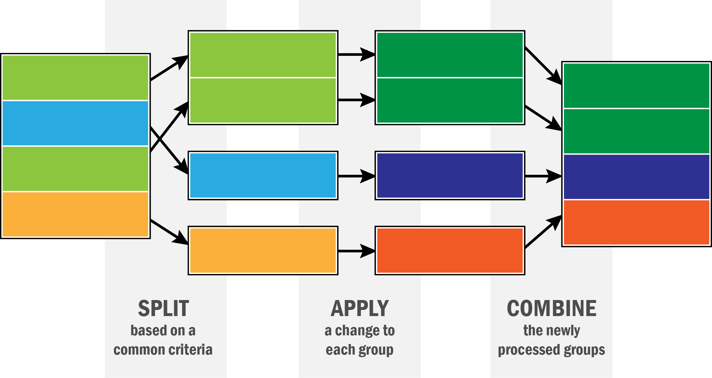
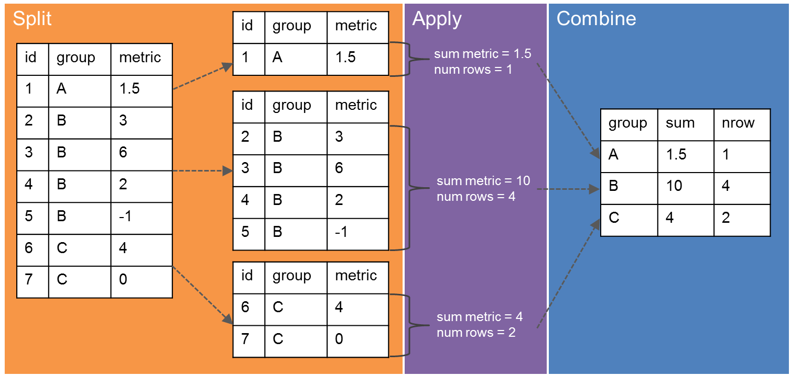
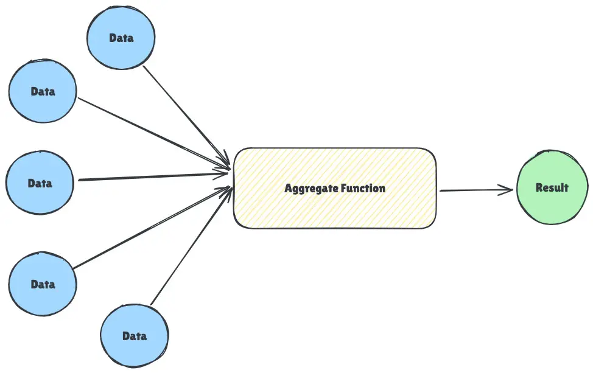

import numpy as np
import pandas as pd14 Operazioni di aggregazione e raggruppamento
Le operazioni di aggregazione e di raggruppamento sono un tassello fondamentale per l’analisi statistica dei dati. Oltre a permettere una chiara esplorazione dei dati, rendono facile rispondere a domande complesse.

In pandas e possibile raggruppare i dati in: - 1D: tramite l’operatore group_by, - 2D: tramite l’operatore pivot_table. Questa seconda alternativa e derivata dalla prima, tramite qualche operazione di forma sul DataFrame risultante.
Per decribere questo tipo di operazioni possiamo utilizzare il termine split-apply-combine. Questo vuol dire che un’operazione qualsiasi di raggruppamento puo essere scomposta in tre fasi elementari: - split: vengono formati dei sottogruppi a partire da una o piu dimensioni, - apply: una funzione viene applicata su ognuno dei sottogruppi, - combine: i risultati della funzione su ogni gruppo vengono combinati per creare la tabella risultante.

In pandas l’operazione group_by() e molto flessibile e potente e puo prendere in input una serie di oggetti diversi. Importiamo le librerie che ci serviranno nel resto del capitolo.
14.1 Operazione 1D: group_by()
# dataset esempio
df = pd.DataFrame({
'key1': ['a', 'a', None, 'b', 'b', 'a', None],
'key2': pd.Series([1,2,1,2,1,None,1], dtype = 'Int64'),
'data1' : np.random.standard_normal(7),
'data2' : np.random.standard_normal(7)
})
df.head()| key1 | key2 | data1 | data2 | |
|---|---|---|---|---|
| 0 | a | 1 | 1.638013 | -0.867389 |
| 1 | a | 2 | -1.497472 | -0.805103 |
| 2 | None | 1 | 1.093328 | 0.645199 |
| 3 | b | 2 | -0.602294 | -0.787637 |
| 4 | b | 1 | -0.071335 | -1.317064 |
L’operazione group_by() puo prendere in input diversi oggetti a seconda del caso d’uso. Di seguito tratteremo i casi piu comuni, per una trattazione completa della funzione si rimanda alla documentazione relativa.
14.1.1 Per colonna
E possibile specificare il nome di una o piu colonne del dataframe rispetto alle quali raggruppare i dati. In questo caso, i campi di aggregazione prendono il nome di dimensioni o key. I valori che vogliamo considerare per ogni gruppo prendono il nome di values.
# split per key1 della colonna data1
grouped = df['data1'].groupby(df['key1'])
# apply-combine della funzione mean ai gruppi
grouped.mean()key1
a -0.037498
b -0.336815
Name: data1, dtype: float64Una volta applicato il metodo group_by() ai dati, se non vengono specificate funzioni di aggregazione pandas ritorna un tipo di oggetto particolare. Uno degli attributi piu utili di questo oggetto e size(), che permette di calcolare quanti elementi ci osno all’interno di ogni sottogruppo individuato.
df.groupby(['key1']).size()key1
a 3
b 2
dtype: int64# conteggio delle entrate non-nulle in ogni gruppo
df.groupby(['key1']).count()| key2 | data1 | data2 | |
|---|---|---|---|
| key1 | |||
| a | 2 | 3 | 3 |
| b | 2 | 2 | 2 |
Altri esempi sono:
means = df['data1'].groupby([df['key1'], df['key2']]).mean()
meanskey1 key2
a 1 1.638013
2 -1.497472
b 1 -0.071335
2 -0.602294
Name: data1, dtype: float64# codice equivalente
means = df.groupby(['key1', 'key2'])['data1'].mean()
meanskey1 key2
a 1 1.638013
2 -1.497472
b 1 -0.071335
2 -0.602294
Name: data1, dtype: float64Bisogna prestare attenzione. In generale vengono aggregate tutte le colonne numeriche, le altre vengono ignorate. Se questo non succede, pandas lancia un errore quando la funzione di aggregazione non e compatibile con un tipo di colonna su cui deve essere calcolata.
df.groupby('key2')[['data1', 'data2']].mean()| data1 | data2 | |
|---|---|---|
| key2 | ||
| 1 | 0.592733 | -0.076448 |
| 2 | -1.049883 | -0.796370 |
Indice Numerico
Di default i valori della key specificata vengono utilizzati come indice. Per evitare che questo succeda baste specificare il parametro
as_index = Falsequando si chiamagroup_by()
14.1.1.1 Filtrare le colonne
E possibile specificare quali colonne del dataset originale debbano essere raggruppate nella tabella risultante. Questo risulta utile specialmente nel caso di dataset molto grandi. Per fare questo esistono due notazioni equivalenti.
# notazione 1
df.groupby('key1')['data1']
df.groupby('key1')[['data1']]
# notazione 2
df['data1'].groupby(df['key1'])
df[['data2']].groupby(df['key1'])<pandas.core.groupby.generic.DataFrameGroupBy object at 0x7e1bf282fd10>14.1.1.2 Iterare sui gruppi
L’oggetto ritornato da group_by() e iterabile. Vediamo come:
for name, group in df.groupby('key1'):
print(name)
print(group)
print('\n')a
key1 key2 data1 data2
0 a 1 1.638013 -0.867389
1 a 2 -1.497472 -0.805103
5 a <NA> -0.253036 -0.534508
b
key1 key2 data1 data2
3 b 2 -0.602294 -0.787637
4 b 1 -0.071335 -1.317064
Questo puo tornare molto utile per creare un dizionario che permetta in maniera veloce di risalire aii vari gruppi individuati in caso di bisogno.
groups = {
name : group for name, group in df.groupby('key1')
}
groups['b']| key1 | key2 | data1 | data2 | |
|---|---|---|---|---|
| 3 | b | 2 | -0.602294 | -0.787637 |
| 4 | b | 1 | -0.071335 | -1.317064 |
14.1.2 Con Dizionari e Serie
Esistono dei casi in cui le informazioni di aggregazione sui dati non sono immagazzinate all’interno del dataset stesso, ma in una fonte esterna, come ad esempio un Dizionario o una Serie.
# esempio
people = pd.DataFrame(
np.random.standard_normal((5,5)),
columns = ['a', 'b', 'c', 'd', 'e'],
index = ['Joe', 'Steve', 'Wanda', 'Jill', 'Trey']
)
# aggiunta di valori nulli
people.iloc[2:3, [1,2]] = np.nan
people| a | b | c | d | e | |
|---|---|---|---|---|---|
| Joe | -0.064650 | -0.723468 | -0.150287 | -0.667095 | 0.569448 |
| Steve | -2.216943 | -0.159841 | 0.990931 | -0.668985 | 0.114039 |
| Wanda | -0.105461 | NaN | NaN | 1.119719 | 1.146443 |
| Jill | 1.034958 | -2.414942 | -0.918781 | 0.404847 | -1.010566 |
| Trey | -0.799315 | 0.177116 | 0.346175 | 0.617646 | -0.050248 |
mapping = {
'a': 'red',
'b': 'red',
'e': 'red',
'c': 'blue',
'd': 'blue',
'f': 'orange' # NOTA: colonna mancante non crea problemi
}
people.groupby(mapping, axis= 'columns').sum()/tmp/ipykernel_43500/3401903219.py:10: FutureWarning: DataFrame.groupby with axis=1 is deprecated. Do `frame.T.groupby(...)` without axis instead.
people.groupby(mapping, axis= 'columns').sum()| blue | red | |
|---|---|---|
| Joe | -0.817382 | -0.218671 |
| Steve | 0.321946 | -2.262745 |
| Wanda | 1.119719 | 1.040982 |
| Jill | -0.513935 | -2.390550 |
| Trey | 0.963821 | -0.672447 |
# codice equivalente
people.groupby(pd.Series(mapping), axis='columns').sum()14.1.3 Con Funzioni
Il raggruppamento con dizionario puo essere visto come un caso particolare di raggruppamento per funzione.
# raggruppamento per lunghezza del nome (di default il raggruppamento viene applicato all'indice)
people.groupby(len).sum()| a | b | c | d | e | |
|---|---|---|---|---|---|
| 3 | -0.064650 | -0.723468 | -0.150287 | -0.667095 | 0.569448 |
| 4 | 0.235643 | -2.237826 | -0.572607 | 1.022493 | -1.060814 |
| 5 | -2.322404 | -0.159841 | 0.990931 | 0.450734 | 1.260482 |
14.2 Funzioni di aggregazione

Per funzione di aggregazione si intende una funzione che genera un valore scalare a partire da un array.Le piu comuni di queste funzioni sono implementate all’interno di pandas, tuttavia e possibile utilizzare funzioni personalizzate, prendendosi carico di eventuali tempi di calcolo piu lunghi.
df| key1 | key2 | data1 | data2 | |
|---|---|---|---|---|
| 0 | a | 1 | 1.638013 | -0.867389 |
| 1 | a | 2 | -1.497472 | -0.805103 |
| 2 | None | 1 | 1.093328 | 0.645199 |
| 3 | b | 2 | -0.602294 | -0.787637 |
| 4 | b | 1 | -0.071335 | -1.317064 |
| 5 | a | <NA> | -0.253036 | -0.534508 |
| 6 | None | 1 | -0.289072 | 1.233461 |
grouped = df.groupby('key1')# number of NA values
grouped.count()| key2 | data1 | data2 | |
|---|---|---|---|
| key1 | |||
| a | 2 | 3 | 3 |
| b | 2 | 2 | 2 |
# somma
grouped.sum()| key2 | data1 | data2 | |
|---|---|---|---|
| key1 | |||
| a | 3 | -0.112495 | -2.207000 |
| b | 3 | -0.673629 | -2.104701 |
# minimo e massimo
grouped.min()| key2 | data1 | data2 | |
|---|---|---|---|
| key1 | |||
| a | 1 | -1.497472 | -0.867389 |
| b | 1 | -0.602294 | -1.317064 |
# il dato n-esimo se i dati fossero ordinati
grouped.nth(0)| key1 | key2 | data1 | data2 | |
|---|---|---|---|---|
| 0 | a | 1 | 1.638013 | -0.867389 |
| 3 | b | 2 | -0.602294 | -0.787637 |
# varianza e deviazione standard
grouped.std()
grouped.var()| key2 | data1 | data2 | |
|---|---|---|---|
| key1 | |||
| a | 0.5 | 2.492659 | 0.031319 |
| b | 0.5 | 0.140959 | 0.140146 |
Se invece volessimo utilizzare funzioni specifiche:
grouped.agg(lambda x : x.max() - x.min())| key2 | data1 | data2 | |
|---|---|---|---|
| key1 | |||
| a | 1 | 3.135485 | 0.332881 |
| b | 1 | 0.530959 | 0.529427 |
In generale e possibile applicare piu funzioni a colonne diverse della stessa tabella. Questo permette di ottenere una tabella risultante completa, dove per ogni colonna della tabella aggregata vengono calcolate funzioni specifiche, che magari dipendono dal tipo di dato.
tips = pd.read_csv('https://raw.githubusercontent.com/wesm/pydata-book/refs/heads/3rd-edition/examples/tips.csv')
# aggiunta di una colonna
tips['tip_pct'] = tips['tip'] / tips['total_bill']
tips.head()| total_bill | tip | smoker | day | time | size | tip_pct | |
|---|---|---|---|---|---|---|---|
| 0 | 16.99 | 1.01 | No | Sun | Dinner | 2 | 0.059447 |
| 1 | 10.34 | 1.66 | No | Sun | Dinner | 3 | 0.160542 |
| 2 | 21.01 | 3.50 | No | Sun | Dinner | 3 | 0.166587 |
| 3 | 23.68 | 3.31 | No | Sun | Dinner | 2 | 0.139780 |
| 4 | 24.59 | 3.61 | No | Sun | Dinner | 4 | 0.146808 |
grouped = tips.groupby(['day', 'smoker'])
# estrazione di una colonna dalla tabella aggregata
grouped_pct = grouped['tip_pct']
# calcolo di funzioni diverse su questa colonna nominate secondo [('nome', 'funzione')]
grouped_pct.agg([
('average', 'mean'),
('standard deviation', 'std'),
('peak_to_peak', lambda x : max(x) - min(x))])| average | standard deviation | peak_to_peak | ||
|---|---|---|---|---|
| day | smoker | |||
| Fri | No | 0.151650 | 0.028123 | 0.067349 |
| Yes | 0.174783 | 0.051293 | 0.159925 | |
| Sat | No | 0.158048 | 0.039767 | 0.235193 |
| Yes | 0.147906 | 0.061375 | 0.290095 | |
| Sun | No | 0.160113 | 0.042347 | 0.193226 |
| Yes | 0.187250 | 0.154134 | 0.644685 | |
| Thur | No | 0.160298 | 0.038774 | 0.193350 |
| Yes | 0.163863 | 0.039389 | 0.151240 |
14.2.1 Funzioni di Aggregazione multiple
Invece che solamente su una colonna possiamo lavorare direttamente sul Dataframe, specificando quali operaizoni fare su una colonna e quali su un’altra. In questo caso otteniamo una tabella gerarchica che in indice avra i valori delle key specificate, sulle colonne il nome del campo della tabella originale associato a tutte le operazioni che vi sono state calcolate.
functions = ['count', 'mean', 'max']
grouped[['tip_pct', 'total_bill']].agg(
functions
)| tip_pct | total_bill | ||||||
|---|---|---|---|---|---|---|---|
| count | mean | max | count | mean | max | ||
| day | smoker | ||||||
| Fri | No | 4 | 0.151650 | 0.187735 | 4 | 18.420000 | 22.75 |
| Yes | 15 | 0.174783 | 0.263480 | 15 | 16.813333 | 40.17 | |
| Sat | No | 45 | 0.158048 | 0.291990 | 45 | 19.661778 | 48.33 |
| Yes | 42 | 0.147906 | 0.325733 | 42 | 21.276667 | 50.81 | |
| Sun | No | 57 | 0.160113 | 0.252672 | 57 | 20.506667 | 48.17 |
| Yes | 19 | 0.187250 | 0.710345 | 19 | 24.120000 | 45.35 | |
| Thur | No | 45 | 0.160298 | 0.266312 | 45 | 17.113111 | 41.19 |
| Yes | 17 | 0.163863 | 0.241255 | 17 | 19.190588 | 43.11 | |
grouped.agg(
{
'tip_pct' : ['min', 'max', 'mean', 'std'],
'size' : [('conteggio','sum')]
}
)| tip_pct | size | |||||
|---|---|---|---|---|---|---|
| min | max | mean | std | conteggio | ||
| day | smoker | |||||
| Fri | No | 0.120385 | 0.187735 | 0.151650 | 0.028123 | 9 |
| Yes | 0.103555 | 0.263480 | 0.174783 | 0.051293 | 31 | |
| Sat | No | 0.056797 | 0.291990 | 0.158048 | 0.039767 | 115 |
| Yes | 0.035638 | 0.325733 | 0.147906 | 0.061375 | 104 | |
| Sun | No | 0.059447 | 0.252672 | 0.160113 | 0.042347 | 167 |
| Yes | 0.065660 | 0.710345 | 0.187250 | 0.154134 | 49 | |
| Thur | No | 0.072961 | 0.266312 | 0.160298 | 0.038774 | 112 |
| Yes | 0.090014 | 0.241255 | 0.163863 | 0.039389 | 40 | |
14.3 Operazione Generale: apply()
L’operazione apply() puo essere vista come una forma generale dell’operazione split-apply-combine. apply() permette di dividere i dati in gruppi in base a key specificate, di applicare una funzione su ognuno dei gruppi, di concatenare i risultati su ogni gruppo della funzione in un DataFrame risultante.
def top(df, n=5, column = 'tip_pct'):
return df.sort_values(column, ascending = False)[:n]
top(tips, n=6)| total_bill | tip | smoker | day | time | size | tip_pct | |
|---|---|---|---|---|---|---|---|
| 172 | 7.25 | 5.15 | Yes | Sun | Dinner | 2 | 0.710345 |
| 178 | 9.60 | 4.00 | Yes | Sun | Dinner | 2 | 0.416667 |
| 67 | 3.07 | 1.00 | Yes | Sat | Dinner | 1 | 0.325733 |
| 232 | 11.61 | 3.39 | No | Sat | Dinner | 2 | 0.291990 |
| 183 | 23.17 | 6.50 | Yes | Sun | Dinner | 4 | 0.280535 |
| 109 | 14.31 | 4.00 | Yes | Sat | Dinner | 2 | 0.279525 |
tips.groupby('smoker')[['total_bill', 'tip_pct']].apply(top)| total_bill | tip_pct | ||
|---|---|---|---|
| smoker | |||
| No | 232 | 11.61 | 0.291990 |
| 149 | 7.51 | 0.266312 | |
| 51 | 10.29 | 0.252672 | |
| 185 | 20.69 | 0.241663 | |
| 88 | 24.71 | 0.236746 | |
| Yes | 172 | 7.25 | 0.710345 |
| 178 | 9.60 | 0.416667 | |
| 67 | 3.07 | 0.325733 | |
| 183 | 23.17 | 0.280535 | |
| 109 | 14.31 | 0.279525 |
In casi specifici vorremo evitare di ottenere una tabella gerarchica in output, magari per utilizzare Altair al dine di creare visualizzazioni o grafici.
# non volendo ottenere un atabella gerarchica in output
tips.groupby('smoker', group_keys=False)[['smoker','total_bill', 'tip_pct']].apply(top)| smoker | total_bill | tip_pct | |
|---|---|---|---|
| 232 | No | 11.61 | 0.291990 |
| 149 | No | 7.51 | 0.266312 |
| 51 | No | 10.29 | 0.252672 |
| 185 | No | 20.69 | 0.241663 |
| 88 | No | 24.71 | 0.236746 |
| 172 | Yes | 7.25 | 0.710345 |
| 178 | Yes | 9.60 | 0.416667 |
| 67 | Yes | 3.07 | 0.325733 |
| 183 | Yes | 23.17 | 0.280535 |
| 109 | Yes | 14.31 | 0.279525 |
14.3.1 Bucket analysis o Binning
<img src = ‘images/bucket_analysis.webp’, dim = 300> <>
Combinando le funzioni cut() e qcut() di pandas con groupby() ed apply() possiamo applicare operazioni specifiche a gruppi di dati. Una delle applicazioni piu comuni e quella della bucket analysis o binning dei dati.
Perché si fa? Immagina di avere l’età esatta di 10.000 clienti. Analizzare ogni singola età (18, 19, 20, 21…) è dispersivo. È molto più utile raggrupparli in “secchi” logici: - 0-18 anni (Minorenni) - 19-35 anni (Giovani Adulti) - 36-60 anni (Adulti) - 60+ anni (Senior)
In Python (Pandas) ci sono due funzioni fondamentali per fare questo, e la differenza è cruciale: 1. Bucket a “Bordi Fissi” (pd.cut) Sei TU a decidere dove tagliare. Definisci i limiti dei secchi in base a una logica di business. Esempio: Voti scolastici. Da 0 a 5 è insufficiente, da 6 a 10 è sufficiente. Non importa quanti studenti ci siano in ogni gruppo.
# Creiamo 3 fasce di prezzo: Basso, Medio, Alto
bins = [0, 10, 50, 1000] # I bordi dei tagli
labels = ['Economico', 'Standard', 'Premium']
df['fascia_prezzo'] = pd.cut(df['prezzo'], bins=bins, labels=labels)- Bucket a “Quantili” (
pd.qcut) Sono I DATI a decidere i tagli. Tu dici solo “voglio 4 gruppi con lo stesso numero di persone”. Pandas calcolerà matematicamente dove tagliare per dividere la popolazione equamente. Esempio: Vuoi trovare il “Top 25% dei clienti che spendono di più”. Usi qcut con q=4 (quartili).
# Divide i dati in 4 gruppi uguali (0-25%, 25-50%, etc.)
df['quantile_spesa'] = pd.qcut(df['spesa_totale'], q=4, labels=['Bronze', 'Silver', 'Gold', 'Platinum'])Dal punto di vista della visualizzazione un istogramma è essenzialmente una bucket analysis visiva.
# esempio
frame = pd.DataFrame({
'data1' : np.random.standard_normal(1000),
'data2' : np.random.standard_normal(1000)
})
# assegnazione di ognuno dei valori di data1 ad uno fra 4 intervalli di uguale lunghezza
quartiles = pd.cut(frame['data1'], 4)
quartiles.head(10)0 (-1.397, 0.13]
1 (-1.397, 0.13]
2 (-1.397, 0.13]
3 (0.13, 1.658]
4 (-1.397, 0.13]
5 (-1.397, 0.13]
6 (0.13, 1.658]
7 (0.13, 1.658]
8 (-1.397, 0.13]
9 (-1.397, 0.13]
Name: data1, dtype: category
Categories (4, interval[float64, right]): [(-2.93, -1.397] < (-1.397, 0.13] < (0.13, 1.658] < (1.658, 3.185]]# combinazione con groupby() per calcolare una serie di statstice su ognuno dei gruppi creati da cut()
def get_stats(group):
return pd.DataFrame({
'min' : group.min(),
'max' : group.max(),
'mean' : group.mean()
})
# raggruppamento dei dati in funzione dell'appartenenza ad un quartile
frame.groupby(quartiles).apply(get_stats)/tmp/ipykernel_43500/2724027405.py:10: FutureWarning: The default of observed=False is deprecated and will be changed to True in a future version of pandas. Pass observed=False to retain current behavior or observed=True to adopt the future default and silence this warning.
frame.groupby(quartiles).apply(get_stats)| min | max | mean | ||
|---|---|---|---|---|
| data1 | ||||
| (-2.93, -1.397] | data1 | -2.923726 | -1.402290 | -1.870978 |
| data2 | -2.113162 | 1.461515 | -0.177624 | |
| (-1.397, 0.13] | data1 | -1.391531 | 0.128214 | -0.528494 |
| data2 | -2.881448 | 3.236322 | -0.063342 | |
| (0.13, 1.658] | data1 | 0.133522 | 1.648053 | 0.686668 |
| data2 | -2.441614 | 3.059146 | -0.073517 | |
| (1.658, 3.185] | data1 | 1.657982 | 3.184710 | 2.053312 |
| data2 | -1.481281 | 1.742467 | 0.094559 |
# codice equivalente
frame.groupby(quartiles).agg(['min', 'max', 'mean'])Se invece avessimo voluto calcolare intervalli che contenevano lo stesso numero di elementi avremmo dovuto utilizzare la funzione qcut(). Sostituendola a cut() nel codice di sopra si ottiene quanto desiderato.
14.4 Operazione 2D: tabello pivot
Le tabelle pivot sono un particolare metodo di impaginazione della tabella aggregata. In questo caso i dati vengono aggregati per una o piu dimensioni (keys), per por eseri disposti su una tabella (2D) con alcune delle dimensioni di aggruppamento sulle colonne ed altre sulle righe.
Per crearne una in pandas possiamo utilizzare la funzione di alto livello pd.pivot_table() che permette di concatenare piu operazione group_by() e di forma fino all’ottenimento del risultato finale. L’operazione di aggregazione di default del metodo e la media.
tips.head()| total_bill | tip | smoker | day | time | size | tip_pct | |
|---|---|---|---|---|---|---|---|
| 0 | 16.99 | 1.01 | No | Sun | Dinner | 2 | 0.059447 |
| 1 | 10.34 | 1.66 | No | Sun | Dinner | 3 | 0.160542 |
| 2 | 21.01 | 3.50 | No | Sun | Dinner | 3 | 0.166587 |
| 3 | 23.68 | 3.31 | No | Sun | Dinner | 2 | 0.139780 |
| 4 | 24.59 | 3.61 | No | Sun | Dinner | 4 | 0.146808 |
tips.drop('time', axis = 'columns').pivot_table(index = ['day', 'smoker'])| size | tip | tip_pct | total_bill | ||
|---|---|---|---|---|---|
| day | smoker | ||||
| Fri | No | 2.250000 | 2.812500 | 0.151650 | 18.420000 |
| Yes | 2.066667 | 2.714000 | 0.174783 | 16.813333 | |
| Sat | No | 2.555556 | 3.102889 | 0.158048 | 19.661778 |
| Yes | 2.476190 | 2.875476 | 0.147906 | 21.276667 | |
| Sun | No | 2.929825 | 3.167895 | 0.160113 | 20.506667 |
| Yes | 2.578947 | 3.516842 | 0.187250 | 24.120000 | |
| Thur | No | 2.488889 | 2.673778 | 0.160298 | 17.113111 |
| Yes | 2.352941 | 3.030000 | 0.163863 | 19.190588 |
# media di tip_pct e size sui dati raggruppati per time, day, columns calcolando le marginali
pt = tips.pivot_table(index = ['time', 'day'], columns= ['smoker'], values = ['tip_pct', 'size'], margins=True)
pt['size']| smoker | No | Yes | All | |
|---|---|---|---|---|
| time | day | |||
| Dinner | Fri | 2.000000 | 2.222222 | 2.166667 |
| Sat | 2.555556 | 2.476190 | 2.517241 | |
| Sun | 2.929825 | 2.578947 | 2.842105 | |
| Thur | 2.000000 | NaN | 2.000000 | |
| Lunch | Fri | 3.000000 | 1.833333 | 2.000000 |
| Thur | 2.500000 | 2.352941 | 2.459016 | |
| All | 2.668874 | 2.408602 | 2.569672 |
pt['tip_pct']| smoker | No | Yes | All | |
|---|---|---|---|---|
| time | day | |||
| Dinner | Fri | 0.139622 | 0.165347 | 0.158916 |
| Sat | 0.158048 | 0.147906 | 0.153152 | |
| Sun | 0.160113 | 0.187250 | 0.166897 | |
| Thur | 0.159744 | NaN | 0.159744 | |
| Lunch | Fri | 0.187735 | 0.188937 | 0.188765 |
| Thur | 0.160311 | 0.163863 | 0.161301 | |
| All | 0.159328 | 0.163196 | 0.160803 |
Per usare funzioni di aggregazione diverse dalla media possiamo specificare il parametro aggfunc. Mentre per riempire i campi NaN possiamo specificare il parametro fill_value con una valore di sostituzione opportuno.
tips.pivot_table(
index = ['time', 'size'],
columns = ['day', 'smoker'],
values = 'tip_pct',
fill_value = 0
)| day | Fri | Sat | Sun | Thur | |||||
|---|---|---|---|---|---|---|---|---|---|
| smoker | No | Yes | No | Yes | No | Yes | No | Yes | |
| time | size | ||||||||
| Dinner | 1 | 0.000000 | 0.000000 | 0.137931 | 0.325733 | 0.000000 | 0.000000 | 0.000000 | 0.000000 |
| 2 | 0.139622 | 0.171297 | 0.162705 | 0.148668 | 0.168859 | 0.207893 | 0.159744 | 0.000000 | |
| 3 | 0.000000 | 0.000000 | 0.154661 | 0.144995 | 0.152663 | 0.152660 | 0.000000 | 0.000000 | |
| 4 | 0.000000 | 0.117750 | 0.150096 | 0.124515 | 0.148143 | 0.193370 | 0.000000 | 0.000000 | |
| 5 | 0.000000 | 0.000000 | 0.000000 | 0.106572 | 0.206928 | 0.065660 | 0.000000 | 0.000000 | |
| 6 | 0.000000 | 0.000000 | 0.000000 | 0.000000 | 0.103799 | 0.000000 | 0.000000 | 0.000000 | |
| Lunch | 1 | 0.000000 | 0.223776 | 0.000000 | 0.000000 | 0.000000 | 0.000000 | 0.181728 | 0.000000 |
| 2 | 0.000000 | 0.181969 | 0.000000 | 0.000000 | 0.000000 | 0.000000 | 0.166005 | 0.158843 | |
| 3 | 0.187735 | 0.000000 | 0.000000 | 0.000000 | 0.000000 | 0.000000 | 0.084246 | 0.204952 | |
| 4 | 0.000000 | 0.000000 | 0.000000 | 0.000000 | 0.000000 | 0.000000 | 0.138919 | 0.155410 | |
| 5 | 0.000000 | 0.000000 | 0.000000 | 0.000000 | 0.000000 | 0.000000 | 0.121389 | 0.000000 | |
| 6 | 0.000000 | 0.000000 | 0.000000 | 0.000000 | 0.000000 | 0.000000 | 0.173706 | 0.000000 | |
Tuttavia questa rimane una trattazione tutt’altro che esauriente delle possibilita che si hanno con pivot_table, per la trattazione delle quali si rimanda alla relativa documentazione.
14.4.1 Tabella delle frequenze
Una tabella delle frequenza e un caso particolare di tabella pivot, nel caso in cui la funzione di aggregazione utilizzata sia count(). Per ognuna delle combinazioni possibili delle dimensioni, si contano quanto elementi appartengano ad ogni sottogruppo individuato.
# dataset di prova
data = {
'Città': ['Milano', 'Milano', 'Roma', 'Roma', 'Roma', 'Napoli'],
'Device': ['Mac', 'PC', 'Mac', 'PC', 'PC', 'Mac'],
'Squadra': ['Inter', 'Milan', 'Lazio', 'Roma', 'Roma', 'Napoli']
}
df = pd.DataFrame(data)
pd.crosstab(data['Città'], [data['Device'], data['Squadra']])| col_0 | Mac | PC | |||
|---|---|---|---|---|---|
| col_1 | Inter | Lazio | Napoli | Milan | Roma |
| row_0 | |||||
| Milano | 1 | 0 | 0 | 1 | 0 |
| Napoli | 0 | 0 | 1 | 0 | 0 |
| Roma | 0 | 1 | 0 | 0 | 2 |
Questa è la funzione che rende crosstab superiore a groupby per l’analisi esplorativa. Possiamo chiedere: > “Sul totale della singola città, che percentuale usa Mac?”
# normalize='index' calcola la % riga per riga (la somma della riga fa 100%)
pd.crosstab(df['Città'], df['Device'], normalize='index')| Device | Mac | PC |
|---|---|---|
| Città | ||
| Milano | 0.500000 | 0.500000 |
| Napoli | 1.000000 | 0.000000 |
| Roma | 0.333333 | 0.666667 |
Questa funzione e perfetta per generare delle heatmap a partire dai dati grezzi.